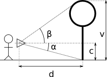
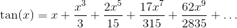
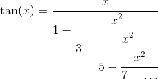
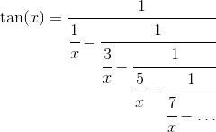

IZP:Projekt2
Zadání je ve fázi tvorby a není koneèné.
Implementujte výpoèet vzdálenosti a vý¹ky mìøeného objektu pomocí údajù
ze senzorù natoèení mìøicího pøístroje. Výpoèet proveïte pouze pomocí
matematických operací +,-,*,/.

Odevzdání: Program implementujte ve zdrojovém souboru proj2.c. Zdrojový soubor odevzdejte prostøednictvím informaèního systému.
Pøeklad: Program pøekládejte s následujícími argumenty:
$ gcc -std=c99 -Wall -Wextra -pedantic proj2.c -lm -o proj2
Program se spou¹tí v následující podobì:
./proj2 --help
nebo
./proj2 --tan A N M
nebo
./proj2 [-c X] -m A [B]
Argumenty programu:
- --help zpùsobí, ¾e program vytiskne nápovìdu pou¾ívání programu a skonèí.
- --tan srovná pøesnosti výpoètu tangens úhlu A (v radiánech) mezi voláním tan z matematické knihovny, a výpoètu tangens pomocí Taylorova polynomu a zøetìzeného zlomku. Argumenty N a M udávají, ve kterých iteracích iteraèního výpoètu má srovnání probíhat. 0 < N <= M < 14
- -m vypoèítá a zmìøí vzdálenosti.
- Úhel α (viz obrázek) je dán argumentem A v radiánech. Program vypoèítá a vypí¹e vzdálenost mìøeného objektu. 0 < A <= 1.4 < π/2.
- Pokud je zadán, úhel β udává argument B v radiánech. Program vypoèítá a vypí¹e i vý¹ku mìøeného objektu. 0 < B <= 1.4 < π/2
- Argument -c nastavuje vý¹ku mìøicího
pøístroje c pro výpoèet. Vý¹ka c je dána argumentem X (0 < X <=
100). Argument je volitelný - implicitní vý¹ka je 1.5 metrù.
Je zakázané pou¾ít funkce z matematické knihovny. Jedinou výjimkou je funkce tan pou¾itá pouze pro srovnání výpoètù, funkce isnan a isinf a konstanty NAN a INF. Ve v¹ech výpoètech pou¾ívejte typ double. Uva¾ujte pøesnost na 10 míst. Poèet iterací v iteraèních výpoètech odvoïte.
Funkci tangens implementujte dvakrát a to pomocí Taylorova polynomu a zøetìzených zlomkù.
Tangens pomocí Taylorova polynomu implementujte ve funkci s prototypem:
double taylor_tan(double x, unsigned int n);
kde x udává úhel a n rozvoj polynomu (poèet èlenù). Taylorùv polynom pro funkci tangens vypadá následovnì:

pøièem¾ øada èitatelù ve zlomcích koeficientù je zde a øada jmenovatelù ve zlomcích koeficientù je zde. Ve svém programu pou¾ijte pouze 13 prvních koeficientù.
Tangens pomocí zøetìzených zlomkù (viz demonstraèní cvièení) implementujte ve funkci s prototypem:
double cfrac_tan(double x, unsigned int n);
kde x udává úhel a n rozvoj zøetìzeného zlomku:

nebo

Srovnání iteraèních a zabudovaných výpoètù realizujte pro zadaný poèet
iterací. Výstup srovnání bude v podobì øádkù obsahující následující:
I M T TE C CE
(odpovídající formátu "%d %e %e %e %e %e\n"), kde:
- I znaèí poèet iterací iteraèního výpoètu,
- M výsledek z funkce tan matematické knihovny,
- T výsledek z funkce taylor_tan,
- TE absolutní chybu mezi výpoètem pomocí Taylorova polynomu a matematickou knihovnou,
- C výsledek z funkce cfrac_tan a
- CE absolutní chybu mezi výpoètem pomocí zøetìzených zlomkù a matematickou knihovnou.
Poèet iterací udává interval daný argumenty programu <N;M>. Výstup programu tedy bude obsahovat N-M+1 øádkù. První øádek tedy zaèíná èíslem N.
Pro mìøení vzdálenosti a vý¹ky pou¾ijte vámi implementovanou funkci cfrac_tan.
V pøípadì zadaného úhlu α i β vypi¹te dvì èísla odpovídající délce d a
vý¹ce v (v tomto poøadí). Oba èíselné údaje vypisujte formátovaným
výstupem pomocí "%.10e", ka¾dý údaj samostatnì na jeden øádek.
Èíselné údaje nemusí odpovídat va¹í implementaci. Výsledek závisí na zpùsobu implementace a optimalizaci.
$ ./proj2 --tan 1.024 6 10
6 1.642829e+00 1.634327e+00 8.502803e-03 1.642829e+00 3.298801e-09
7 1.642829e+00 1.639216e+00 3.613451e-03 1.642829e+00 1.794520e-11
8 1.642829e+00 1.641294e+00 1.535615e-03 1.642829e+00 7.460699e-14
9 1.642829e+00 1.642177e+00 6.525932e-04 1.642829e+00 4.440892e-16
10 1.642829e+00 1.642552e+00 2.773337e-04 1.642829e+00 0.000000e+00
$ ./proj2 -m 0.3 0.9
4.8490922156e+00
7.6106234032e+00
$ ./proj2 -c 1.7 -m 0.15 1.3
1.1248205560e+01
4.2217188781e+01
Na výsledném hodnocení mají hlavní vliv následující faktory:
- implementace algoritmických schemat pro iteraèní výpoèty,
- volba funkcí a jejich parametrù pro výpoèet mìøených velièin,
- výpoèet tangens a srovnání pøesnosti,
- výpoèet vzdálenosti a vý¹ky,
- o¹etøení neoèekávaných stavù.
{kind=link}
{kind=link}
{kind=link}
{kind=link}